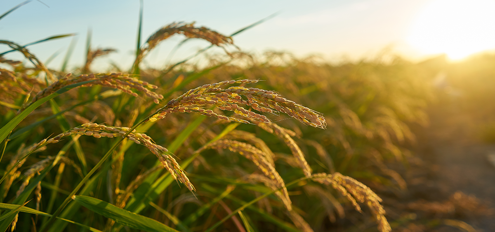

Lush Rice Plantations


Abrod Farms recognizes the vital role of Nigerian farmers in the rice cultivation landscape.
As Nigeria stands as a major rice producer in West Africa but also a significant rice importer, there's a unique opportunity for enhancing rice productivity.
Currently, the average yield is at 1.51 tonne/ha across approximately 3.7 million hectares, which represents about 10.6% of Nigeria's 35 million hectares of cultivable land.
At Abrod Farms, we understand that 77% of this rice cultivation is rain-fed, with diverse farming practices including 47% lowland and 30% upland cultivation.
Recognizing rice as a global staple, third in importance after wheat and maize, we are committed to supporting Nigerian rice farmers.
We aim to leverage the country's diverse ecological belts, all favorable for rice growth, to improve yields and reduce the need for imports.
Through collaborative efforts with local farmers, we aspire to enhance techniques, increase productivity, and promote sustainable farming practices across Nigeria’s rice cultivation regions.
Your satisfaction and feedback are vital to us. For inquiries or comments, please feel free to reach out: info@a-brod.com
We look forward to serving you with our exceptional produce and hope you enjoy them as much as we enjoy bringing them to you.